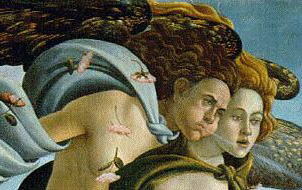

 ACM Multimedia 2010 is the premier annual conference covering all aspects of multimedia computing. The ACM MM Interactive Art Program connects the arts and multimedia communities to explore, discuss, and push the limits for the advancement of multimedia science and technology through the arts, and the arts through multimedia science and technology.
ACM Multimedia 2010 is happening now in Firenze! We are excited to present an international cadre of cutting-edge multimedia artists, including Monika Fleischmann and Wolfgang Strauss, Victoria Vesna and Jim Gimzewski, Thecla Schiphorst, Leah Buechley, Tamiko Thiel, and Franz Fischnaller. The exhibition catalog is here. The press release is here. We look forward to seeing you in the exhibition at Palazzo Medici-Riccardi, from 25 October through 6 November, 2010.
CALL FOR ART WORKS AND PAPERS
This 7th version of the Interactive Art Program will consist of an art exhibition and an art papers conference track. We invite artists + designers working with digital media, and scientists + engineers invoking artistic methods to submit their original contributions to the following tracks:
Multimedia Art Exhibition
Colorito: An Interactive Renaissance of ColorWe seek artworks that use multimedia to explore psycho-physical color phenomena, resulting in challenging and rewarding intellectual and experiential spaces. Algorithmic generation, filtering, and recognition of color contrasts, harmonies, and other relationships are emphasized. Multisensory interactive interfaces are encouraged that experiment with the expressive possibilities of color in order to establish immediate emotional responses, reflection, human in the affect stimulus / recognition loops, and other intentional spaces of experience. We particularly seek interactive multimedia works that realize strong artistic concepts by combining multiple media, interaction modalities, technologies, and novel technical ideas, creating a new perspective. Strong conceptual and personal expressions are also valued. Instantiating the local community / global village connection, we strongly encourage European artists to submit work. The exhibition will take place at the Palazzo Medici-Riccardi. It will sustain for two weeks, from 25 October through 6 November, 2010. Check-out the guide to art work submissions for details on what to submit.
Art Papers
We solicit papers describing interactive multimedia artworks, tools, applications, and technical approaches for creative uses of multimedia content and technology. We encourage work that integrates art and science perspectives and methodologies. We seek integrated artistic and scientific statements describing digital systems that support creative and expressive processes, in forms such as interactive experience environments, installations, media compositions, tools, and work environments. We invite papers on works that are interactive, particularly new works that utilize multi-modal human-computer interfaces involving sensors and recognition algorithms. We appreciate papers with strong technical and conceptual exposition, written by artists. We urge you to read the guide for successful interactive art papers.
Components of good research contributions include: (1) conceptual basis and origins; (2) novel algorithms and interaction methods; (3) data that validates use and describes human experiences.
Papers may be long (10 pages) or short (2 to 4 pages). Long papers are presented in front of an audience. Short papers are presented in poster format.
Accepted papers will be published in the ACM Multimedia Conference proceedings.
Important Dates
| March 21, 2010 | Full paper abstract submission deadline |
| April 11, 2010 | Full paper and exhibition art work submission deadline |
| May 7, 2010 | Short paper submission deadline |
| July 5, 2010 | Notification of acceptance |
| July 26, 2010 | Camera-ready submission deadline |
Program Chairs
- Luca Farulli, University of Florence, Italy (lufarul
 tin.it)
tin.it) - Andruid Kerne, Interface Ecology Lab, Texas A&M University, USA (andruidcse.tamu.edu)
- Frank Nack, HCS, University of Amsterdam, NL (nackuva.nl)